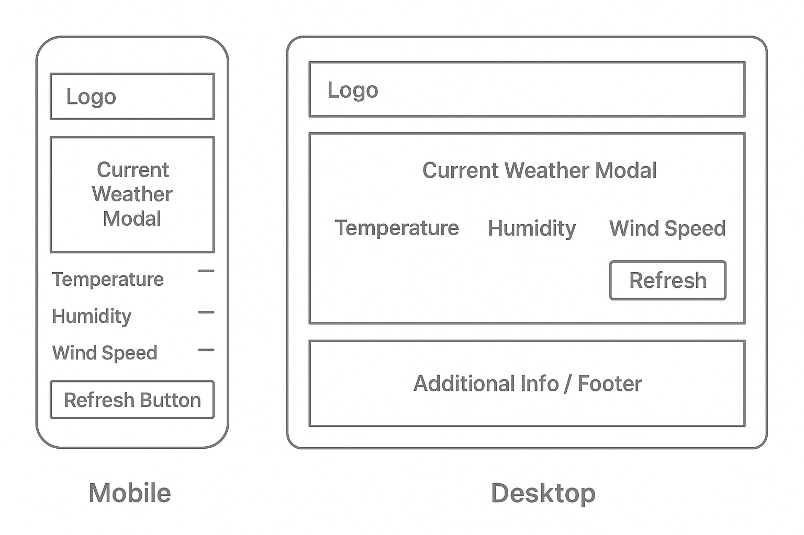

Project Name: Accra Weather Dashboard
This name clearly identifies the site as a weather information tool specifically for Accra, Ghana, making it easy for local users to understand its purpose.
This website provides real-time weather information for Accra, Ghana, including temperature, humidity, and wind speed, sourced from the OpenWeatherMap API. The site is designed to be simple, clean, mobile-friendly, and accessible, helping residents and visitors easily stay updated with current weather conditions.
Primary Color: #0077b6 (Deep Blue) — used for all headings, important buttons, and accents.
Secondary Color: #caf0f8 (Light Sky Blue) — used as background color to keep the design fresh and airy.
The wireframe below illustrates the home page layout for both mobile and desktop views.
Testing for this project will include: